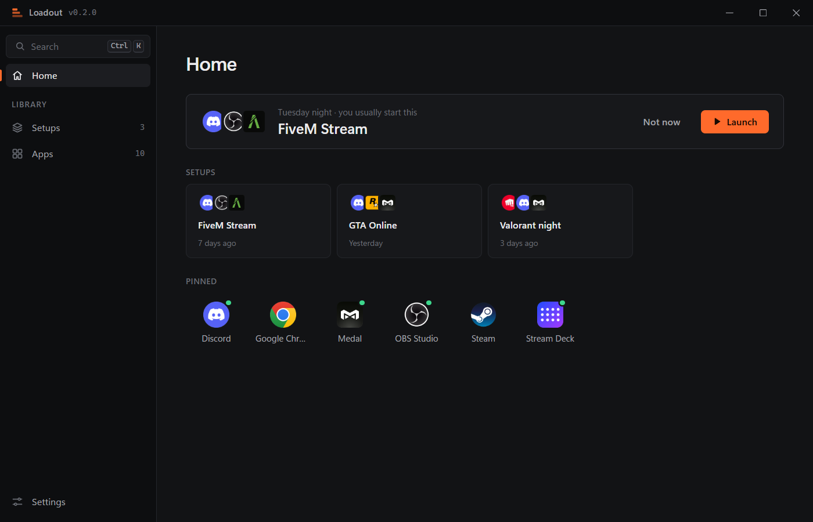

Your whole setup,
one click.
Loadout opens Discord, OBS, your game and everything else you need, in the order you choose. It waits where you tell it to and skips anything that's already open.
-
WaitingDiscordOpens first
-
WaitingOBS Studio3 seconds later
-
WaitingFiveMOnce OBS is up

Made for the five minutes before you go live
Setups
A setup is a list of apps, games and websites that open together. Put them in order, add a pause where one app needs time to load, and launch the whole thing from Home, the tray, or a search.
When you're done, close the whole setup in one go instead of hunting through the taskbar.
Finds your apps for you
The first time you open Loadout, it lists the programs installed on your PC and suggests the ones you probably want. Tick them and you're set. You can also drop in any shortcut or .exe.
Out of the way
Press Ctrl + Alt + Space from anywhere to search your apps and setups, or give a setup its own shortcut. Loadout can start with Windows and sit in the tray until you need it.
Everything stays on your PC. There's no account, and updates install themselves when you say so.
- Download the installerIt's a single .exe file of a few megabytes.
-
Run it Windows may show a blue box saying it protected your PC. That's because Loadout is new and not yet code-signed.Click More info, then Run anyway.
- Pick your appsLoadout opens and helps you add your apps and build your first setup.
Questions
Is it free?
Yes. No trial, no account, no ads.
Why does Windows warn me about it?
Windows SmartScreen warns about any app that isn't code-signed and hasn't been downloaded by many people yet. Loadout doesn't need admin rights and installs only into your user folder. If you'd rather not run it, that's fine too.
Does it work with games from Steam or Epic?
Yes. Find installed apps lists the games you have in Steam and the Epic Games Launcher, and Loadout starts them through the launcher the way their own shortcuts do.
How do updates work?
Loadout checks for a new version in the background and shows a small notice. Click it and the update installs and restarts the app. Your setups stay as they were.
How do I uninstall it?
Open Settings › Apps › Installed apps in Windows, find Loadout and choose Uninstall. It also stops Loadout from starting with Windows.